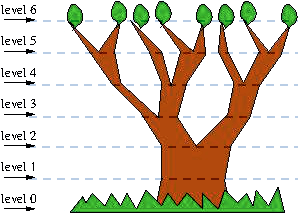

| B - Growing Trees |
Over the past 50 years, about half the world's original forest cover has been lost. It is time to help with the reforestation of the planet and plant more trees!
We have been entrusted with the mission of planting trees and watch how they grow. The kind of trees that we have to plant and observe is known as a mathematical tree. These trees have the following characteristics. On each level, as depicted in the figure below, the tree decides whether branching or not in each subtree, depending on these rules:
At the level 1, it never branches.
If the tree (or subtree) does not branch at the level i, then it will branch at the level i+1.
If the tree (or subtree) branches at the level i, then only one of the two resulting branches will branch at the level i+1.

Example of a mathematical tree.
Leaves appear at the end of each branch on the last level of the tree. Your task, while observing the tree, is to count the number of leaves that the tree has in a particular level of growth, assuming that branches will never merge. However, you do not want to spend all your time counting the leaves by hand, so you want to create a program that tells you the number of leaves at any given level of growth.
Your program receives a sequence of positive integers, one per line, each representing the level of growth of the tree you are observing. The maximum value for the level is 85. The input terminates with a 0.
For each input case, your program must print the corresponding number of leaves that the tree has in such level.
2
3
4
0
1
2
3